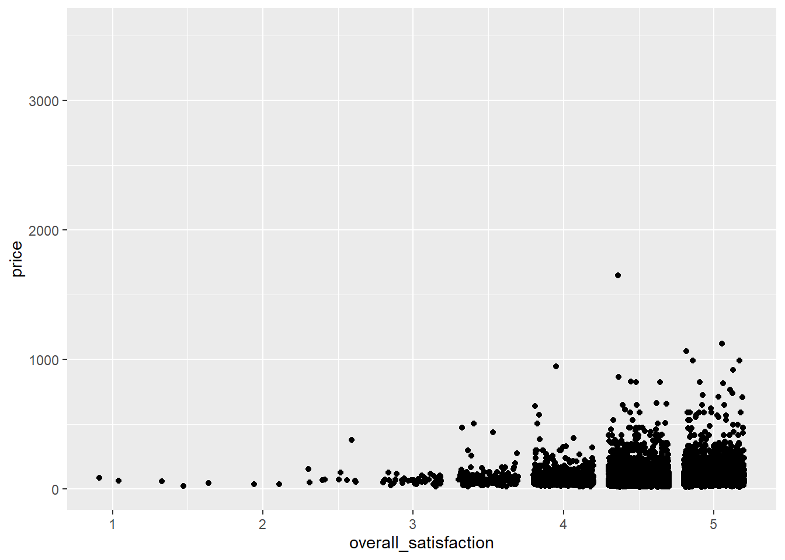

Regressão Linear
Regressão Linear Simples
Digamos que desejamos prever o preço com base em várias características do quarto. Vamos começar com um caso simples em que prevemos preço com base em um preditor: overal_satisfaction (satisfação geral). A satisfação geral é a classificação que uma listagem recebe no airbnb.com. Vamos fazer um gráfico de dispersão primeiro:
ggplot(data = airbnb, mapping = aes(x = overall_satisfaction, y = price)) +
geom_jitter() # jitter em vez de pontos, caso contrario, muitos pontos sao desenhados um sobre o outro## Warning: Removed 7064 rows containing missing values (geom_point).
(Recebemos uma mensagem de erro informando que várias linhas foram removidas. Essas são as linhas com valores ausentes para a overall_satisfaction, portanto, não há necessidade de se preocupar com essa mensagem de erro. Consulte as manipulações de dados) para saber por que faltam valores para a overall_satisfaction.
Os outliers de preço reduzem a informatividade do gráfico, portanto, vamos transformar a variável price. Também vamos adicionar alguns meios ao gráfico, como aprendemos aqui, e uma linha de regressão:
ggplot(data = airbnb, mapping = aes(x = overall_satisfaction, y = log(price, base = exp(1)))) +
geom_jitter() + # jitter em vez de pontos, caso contrario, muitos pontos sao desenhados um sobre o outro
stat_summary(fun.y=mean, colour="green", size = 4, geom="point", shape = 23, fill = "green") + # medias
stat_smooth(method = "lm", se=FALSE) # reta de regressao## Warning: `fun.y` is deprecated. Use `fun` instead.## Warning: Removed 7064 rows containing non-finite values (stat_summary).## `geom_smooth()` using formula 'y ~ x'## Warning: Removed 7064 rows containing non-finite values (stat_smooth).## Warning: Removed 7064 rows containing missing values (geom_point).Vemos que o preço tende a aumentar um pouco com maior satisfação. Para testar se a relação entre preço e satisfação é realmente significativa, podemos realizar uma regressão simples (simples refere-se ao fato de haver apenas um preditor):
linearmodel <- lm(price ~ overall_satisfaction, data = airbnb) # criamos um modelo linear. O primeiro argumento eh o modelo que assume a forma de variavel dependente - variavel (s) independente (s). O segundo argumento sao os dados que devemos considerar.
summary(linearmodel) # solicite um resumo dos resultados desse modelo linear##
## Call:
## lm(formula = price ~ overall_satisfaction, data = airbnb)
##
## Residuals:
## Min 1Q Median 3Q Max
## -80.51 -38.33 -15.51 14.49 1564.67
##
## Coefficients:
## Estimate Std. Error t value Pr(>|t|)
## (Intercept) 29.747 8.706 3.417 0.000636 ***
## overall_satisfaction 12.353 1.864 6.626 3.62e-11 ***
## ---
## Signif. codes: 0 '***' 0.001 '**' 0.01 '*' 0.05 '.' 0.1 ' ' 1
##
## Residual standard error: 71.47 on 10585 degrees of freedom
## (7064 observations deleted due to missingness)
## Multiple R-squared: 0.00413, Adjusted R-squared: 0.004036
## F-statistic: 43.9 on 1 and 10585 DF, p-value: 3.619e-11Vemos dois parâmetros neste modelo:
- \(\beta_{0}\) ou intercepto (29.75)
- \(\beta_{1}\) inclinação de overral_satisfaction (12.35)
Esses parâmetros têm as seguintes interpretações. A interceptação (\(\beta_{0}\)) é o preço estimado para uma observação com satisfação geral igual a zero. A inclinação (\(\beta_{1}\)) é o aumento estimado do preço para cada aumento na satisfação geral. Isso determina a inclinação da linha de regressão ajustada no gráfico. Portanto, para uma listagem com uma satisfação geral de, por exemplo, 3,5, o preço estimado é 29,75 + 3,5× 12,35 = 72,98.
A inclinação é positiva e significativa. Você pode relatar o seguinte: “Havia uma relação significativamente positiva entre preço e satisfação geral (\(\beta = 12,35\), t (10585) = 6,63, $p <$0,001).”
Na saída, também obtemos informações sobre o modelo geral.
O modelo vem com um valor F de 43,9 com 1 grau de liberdade no numerador e 10585 graus de liberdade no denominador. Essa estatística F nos diz se nosso modelo com um preditor (overall_satisfaction) prediz a variável dependente (price) melhor do que um modelo sem preditores (o que simplesmente preveria a média do preço para todos os níveis de satisfação geral). Os graus de liberdade nos permitem encontrar o valor \(p\) correspondente ($<$0,001) da estatística F (43,9). Os graus de liberdade no numerador são iguais ao número de preditores em nosso modelo. Os graus de liberdade no denominador são iguais ao número de observações menos o número de preditores menos um. Lembre-se de que temos 10587 observações para as quais temos valores para price e overall_satisfaction. Como o valor \(p\) é menor que 0,05, rejeitamos a hipótese nula de que nosso modelo não prediz melhor a variável dependente do que um modelo sem preditores. Observe que, no caso de regressão linear simples, o valor p do modelo corresponde ao valor \(p\) do preditor único. Para modelos com mais preditores, não existe essa correspondência.
Por fim, observe também a estatística do R quadrado do modelo. Esta estatística é igual a 0,004. Essa estatística nos diz quanto da variação na variável dependente é explicada por nossos preditores. Quanto mais preditores você adicionar a um modelo, maior será o R quadrado.
Correlação
Observe que na regressão linear simples, a inclinação do preditor é uma função da correlação entre o preditor e a variável dependente. Podemos calcular a correlação da seguinte maneira:
# Certifique-se de incluir o argumento use, caso contrario, o resultado sera NA devido aos valores ausentes na overall_satisfaction.
# O argumento use instrui o R para calcular a correlacao com base apenas nas observacoes para as quais temos dados sobre price e overall_satisfaction.
cor(airbnb$price, airbnb$overall_satisfaction, use = "pairwise.complete.obs")## [1] 0.06426892Vemos que a correlação é positiva, mas muito baixa (r = 0,064).
Elevando ao quadrado essa correlação, você obterá o R quadrado de um modelo com apenas esse preditor (0,064 × 0,064 = 0,004).
Ao lidar com múltiplos preditores (como na próxima seção), podemos gerar uma matriz de correlação. Isso é especialmente útil ao verificar a multicolinearidade. Digamos que desejamos que as correlações entre, price, overall_satisfaction, reviews, accommodates:
airbnb.corr <- airbnb%>%
filter(! is.na (overall_satisfaction))%>% # caso contrario, você vera NAs no resultado
select(price, overall_satisfaction, reviews, accommodates)
cor(airbnb.corr) # obter a matriz de correlacao## price overall_satisfaction reviews accommodates
## price 1.00000000 0.06426892 -0.05827489 0.63409855
## overall_satisfaction 0.06426892 1.00000000 0.03229339 -0.04698709
## reviews -0.05827489 0.03229339 1.00000000 -0.03862767
## accommodates 0.63409855 -0.04698709 -0.03862767 1.00000000## price overall_satisfaction reviews accommodates
## price 1.00000000 0.06426892 -0.05827489 0.63409855
## overall_satisfaction 0.06426892 1.00000000 0.03229339 -0.04698709
## reviews -0.05827489 0.03229339 1.00000000 -0.03862767
## accommodates 0.63409855 -0.04698709 -0.03862767 1.00000000Você pode visualizar facilmente essa matriz de correlação:
#install.packages(corrplot) # instala e carrega o pacote corrplot
library(corrplot)
corrplot(cor(airbnb.corr), method = "number", type = "lower", bg = "grey") # apresente numa tabelaAs cores das correlações dependem de seus valores absolutos.
Você também pode obter valores de p para as correlações (\(p <0,05\) indica que a correlação difere significativamente de zero):
# O comando para os valores-p eh cor.mtest(airbnb.corr)
# Mas queremos apenas os valores-p, portanto $ p
# E arredondamos para cinco digitos, portanto arredondamos (, 5)
round(cor.mtest(airbnb.corr)$p, 5) ## [,1] [,2] [,3] [,4]
## [1,] 0 0.00000 0.00000 0e+00
## [2,] 0 0.00000 0.00089 0e+00
## [3,] 0 0.00089 0.00000 7e-05
## [4,] 0 0.00000 0.00007 0e+00Regressão linear múltipla, com interação
Frequentemente, estamos interessados em interações entre preditores (por exemplo, overall_satisfaction e reviews). Uma interação entre preditores nos diz que o efeito de um preditor depende do nível do outro preditor:
# overall_satisfaction + reviews: a interacao nao eh incluida como preditor
# overall_satisfaction * reviews: a interacao entre os dois preditores eh incluida como preditora
summary(lm(formula = price ~ overall_satisfaction * reviews, data = airbnb))##
## Call:
## lm(formula = price ~ overall_satisfaction * reviews, data = airbnb)
##
## Residuals:
## Min 1Q Median 3Q Max
## -82.17 -36.71 -16.08 13.47 1561.53
##
## Coefficients:
## Estimate Std. Error t value Pr(>|t|)
## (Intercept) 48.77336 10.14434 4.808 1.55e-06 ***
## overall_satisfaction 8.91437 2.17246 4.103 4.10e-05 ***
## reviews -0.99200 0.26160 -3.792 0.00015 ***
## overall_satisfaction:reviews 0.18961 0.05573 3.402 0.00067 ***
## ---
## Signif. codes: 0 '***' 0.001 '**' 0.01 '*' 0.05 '.' 0.1 ' ' 1
##
## Residual standard error: 71.31 on 10583 degrees of freedom
## (7064 observations deleted due to missingness)
## Multiple R-squared: 0.008861, Adjusted R-squared: 0.00858
## F-statistic: 31.54 on 3 and 10583 DF, p-value: < 2.2e-16Com esse modelo, preço estimado = \(\beta_{0} + \beta_{1}\mbox{\textit{overall\_satisfaction}} + \beta_{2}reviews + \beta_{3}\mbox{\textit{overall\_satisfaction}} × reviews\), em que:
- \(\beta_{0}\) é o intercepto (48.77)
- controlando todas as outras variáveis em nosso modelo
- \(\beta_{2}\) representa a relação entre revisões e preço (-0.99), controlando todas as outras variáveis em nosso modelo
- \(\beta_{3}\) é a interação entre satisfação geral e revisões (0.19)
Para um determinado nível de reviews, o relacionamento entre overall_satisfaction e price pode ser reescrito como:
\[ =[\beta_{0}+\beta_{2}\mbox{reviews}]+(\beta_{1}+\beta_{3}\mbox{reviews})\times\,\,\mbox{overall_satisfaction} \]
Vemos que tanto a interceptação (\(\beta_{0}+\beta_{2}reviews\)) e a inclinação (\(\beta_{1}+\beta_{3}reviews\)) a relação entre overall_satisfaction} e price} depende de reviews}. No modelo sem interações, apenas a interceptação da relação entre overall_satisfaction e price dependia de reviews. Como adicionamos ao nosso modelo uma interação entre a overall_satisfaction e o reviews, a inclinação agora também depende de reviews.
Da mesma forma, para um determinado nível de overall_satisfaction, o relacionamento entre reviews e price pode ser reescrito como:
\[ =[\beta_{0}+\beta_{1}\mbox{overall_satisfaction}]+(\beta_{2}+\beta_{3}\mbox{overall_satisfaction})\times\,\,\mbox{reviews} \]
Aqui também vemos que tanto a interceptação quanto a inclinação da relação entre revisões (reviews) e preço (price) dependem da satisfação geral (overall_satisfaction).
Como dito, quando o relacionamento entre uma variável independente e uma variável dependente depende do nível de outra variável independente, temos uma interação entre as duas variáveis independentes. Para esses dados, a interação é altamente significativa (\(p <0,001\)). Vamos visualizar essa interação. Nós nos concentramos na relação entre satisfação geral e preço. Planejaremos isso para um nível de comentários que possa ser considerado baixo, médio e alto:
airbnb %>%
filter(!is.na(overall_satisfaction)) %>%
summarise(min = min(reviews),
Q1 = quantile(reviews, .25), # primeiro quartil
Q2 = quantile(reviews, .50), # segundo quartil ou mediana
Q3 = quantile(reviews, .75), # terceiro quartil
max = max(reviews),
mean = mean(reviews))## min Q1 Q2 Q3 max mean
## 1 3 6 13 32 708 28.47955e crie grupos com base nesses números:
airbnb.reviews <- airbnb %>%
filter(!is.na(overall_satisfaction)) %>%
mutate(review_group = case_when(reviews <= quantile(reviews, .33) ~ "low",
reviews <= quantile(reviews, .66) ~ "medium",
TRUE ~ "high"),
review_group = factor(review_group, levels = c("low","medium","high")))Por isso, pedimos ao R para criar uma nova variável review_group que deve ser igual a “low” quando o número de revisões for menor ou igual ao 33º percentil, “medium” quando o número de revisões for menor ou igual ao 66º percentil e “high”, caso contrário. Depois, fatoramos a variável review_group recém-criada e fornecemos um novo argumento, levels, que especifica a ordem dos níveis dos fatores (caso contrário, a ordem seria alfabética: alta, baixa, média). Vamos verificar se o agrupamento foi bem-sucedido:
# checagem:
airbnb.reviews %>%
group_by(review_group) %>%
summarise(min = min(reviews), max = max(reviews))## `summarise()` ungrouping output (override with `.groups` argument)## # A tibble: 3 x 3
## review_group min max
## <fct> <int> <int>
## 1 low 3 8
## 2 medium 9 23
## 3 high 24 708De fato, o número máximo de revisões em cada grupo corresponde aos pontos de corte definidos acima. Agora, podemos solicitar a R um gráfico da relação entre overall_satisfaction e price para os três níveis de revisão:
ggplot(data = airbnb.reviews, mapping = aes(x = overall_satisfaction, y = log(price, base = exp(1)))) + # transformacao log de preco
facet_wrap(~ review_group) + # peca paineis diferentes para cada grupo de revisao
geom_jitter() +
stat_smooth(method = "lm", se = FALSE)## `geom_smooth()` using formula 'y ~ x'Vemos que a relação entre overall_satisfaction e price é sempre positiva, mas é mais positiva para listagens com muitas críticas do que para listagens com poucas críticas. Pode haver muitas razões para isso. Talvez seja o caso de listagens com críticas positivas aumentarem o preço, mas somente depois de receberem uma certa quantidade de críticas.
Também vemos que as listagens com muitas avaliações quase nunca têm uma classificação de satisfação menor que 3. Isso faz sentido, porque é difícil continuar atraindo pessoas quando a classificação de uma listagem é baixa. Listas com poucas críticas tendem a ter baixos índices de satisfação geral.
Portanto, parece que nossos preditores estão correlacionados: quanto mais avaliações uma listagem tiver, maior será seu índice de satisfação. Isso potencialmente apresenta um problema que discutiremos em uma das próximas seções sobre multicolinearidade
Premissas
Antes de tirar conclusões de uma análise de regressão, é preciso verificar várias suposições. Essas premissas devem ser atendidas independentemente do número de preditores no modelo, mas continuaremos com o caso de dois preditores.
Normalidade de resíduos
Os resíduos (a diferença entre os valores observados e os estimados) devem ser normalmente distribuídos. Podemos inspecionar visualmente os resíduos:
linearmodel <- lm(price ~ overall_satisfaction * reviews, data = airbnb)
residuals <- as_tibble(resid(linearmodel))
#Atenção: Chamar `as_tibble ()` em um vetor eh desencorajado, porque eh provavel que o comportamento mude no futuro. Use `enframe (name = NULL)` em seu lugar.
## Este aviso eh exibido uma vez por sessao.
# veja os residuos do modelo linear com resid(linearmodel)
# e mude isso em seu dataframe com as_tibble()
ggplot(data = residuals, mapping = aes(x = value)) +
geom_histogram()## `stat_bin()` using `bins = 30`. Pick better value with `binwidth`.Homocedasticidade de resíduos
Os resíduos (a diferença entre os valores observados e os estimados) devem ter uma variação constante. Podemos verificar isso plotando os resíduos versus os valores previstos:
linearmodel <- lm(price ~ overall_satisfaction * reviews, data = airbnb)
# cria um dataframe (a tibble)
residuals_predicted <- tibble(residuals = resid(linearmodel), # a primeira variavel são residuos, que sao os residuos do nosso modelo linear
predicted = predict(linearmodel)) # a segunda variavel eh prevista, quais sao os valores previstos do nosso modelo linear
ggplot(data = residuals_predicted, mapping = aes(x = predicted, y = residuals)) +
geom_point()Essa suposição é violada porque, quanto maiores nossos valores previstos, maior a variação que vemos nos resíduos.
Multicolinearidade
A multicolinearidade existe sempre que dois ou mais dos preditores em um modelo de regressão são moderadamente ou altamente correlacionados (portanto, é claro que isso não é um problema no caso de regressão simples). Vamos testar a correlação entre overall_satisfaction e reviews:
# Certifique-se de incluir o argumento use, caso contrario, o resultado sera NA devido aos valores ausentes no overall_satisfaction.
# O argumento use instrui o R para calcular a correlacao com base apenas nas observacoes para as quais temos dados sobre price e overall_satisfaction.
cor.test(airbnb$overall_satisfaction,airbnb$reviews, use = "pairwise.complete.obs") # teste para correlacao##
## Pearson's product-moment correlation
##
## data: airbnb$overall_satisfaction and airbnb$reviews
## t = 3.3242, df = 10585, p-value = 0.0008898
## alternative hypothesis: true correlation is not equal to 0
## 95 percent confidence interval:
## 0.01325261 0.05131076
## sample estimates:
## cor
## 0.03229339Nossos preditores são de fato significativamente correlacionados ($p <$0,001), mas a correlação é realmente baixa (0,03). Ao lidar com mais de dois preditores, é uma boa idéia criar uma matriz de correlação.
O problema da multicolinearidade é que ela infla os erros padrão dos coeficientes de regressão. Como resultado, os testes de significância desses coeficientes terão mais dificuldade em rejeitar a hipótese nula. Podemos facilmente ter uma idéia do grau em que os coeficientes são inflados. Para ilustrar isso, vamos estimar um modelo com preditores correlacionados: acomodações (accommodates) e preço (price) (\(r = 0,56\)).
##
## Call:
## lm(formula = overall_satisfaction ~ accommodates * price, data = airbnb)
##
## Residuals:
## Min 1Q Median 3Q Max
## -3.6494 -0.1624 -0.1105 0.3363 0.6022
##
## Coefficients:
## Estimate Std. Error t value Pr(>|t|)
## (Intercept) 4.622e+00 9.938e-03 465.031 < 2e-16 ***
## accommodates -1.640e-02 2.039e-03 -8.046 9.48e-16 ***
## price 1.356e-03 1.159e-04 11.702 < 2e-16 ***
## accommodates:price -5.423e-05 9.694e-06 -5.595 2.26e-08 ***
## ---
## Signif. codes: 0 '***' 0.001 '**' 0.01 '*' 0.05 '.' 0.1 ' ' 1
##
## Residual standard error: 0.3689 on 10583 degrees of freedom
## (7064 observations deleted due to missingness)
## Multiple R-squared: 0.0199, Adjusted R-squared: 0.01963
## F-statistic: 71.64 on 3 and 10583 DF, p-value: < 2.2e-16Vemos que todos os preditores são significativos. Vamos dar uma olhada nos fatores de inflação da variância:
## accommodates price accommodates:price
## 2.090206 5.359203 6.678312Os fatores VIF informam até que ponto os erros padrão são inflados. Uma regra prática é que VIFs de 5 e acima indicam inflação significativa.
Teste \(\chi^{2}\)
Suponha que tenhamos interesse em encontrar uma verdadeira jóia (gem) de uma lista. Por exemplo, estamos interessados em listagens com uma classificação de 5 em 5 e pelo menos 30 avaliações:
airbnb <- airbnb %>%
mutate(gem = (overall_satisfaction == 5 & reviews>=30), # duas condicoes devem ser atendidas antes de dizer que uma listagem eh uma joia
gem = factor(gem, labels = c("no gem","gem"))) # de a variavel logica rotulos mais intuitivosAgora, digamos que estamos interessados em saber se é mais provável encontrar “jóias” (gem) em cidades pequenas ou grandes (criamos a variável de tamanho aqui). O teste do qui-quadrado pode fornecer uma resposta a essa pergunta testando a hipótese nula de não haver relação entre duas variáveis categóricas (tamanho da cidade: large vs. small & gem: yes vs. no).
Ele compara a tabela de frequências observada com a tabela de frequências que você esperaria quando não houvesse relação entre as duas variáveis. Quanto mais as tabelas de frequência observada e esperada divergem, maior a estatística qui-quadrado, menor o valor de p e menos provável é que as duas variáveis não sejam relacionadas.
Antes de realizarmos um teste qui-quadrado, lembre-se de que algumas cidades têm um valor em falta para o tamanho porque têm um valor em falta para a population. Vamos filtrar isso primeiro:
airbnb.cities <- airbnb %>%
filter(!is.na(size))
# queremos apenas aquelas observacoes em que tamanho nao eh NA. ! significa 'nao'
# veja https://r4ds.had.co.nz/transform.html#filter-rows-with-filter para mais funcoes logicas (desca ate a secao 5.2.2)Agora, imprima as frequências do tamanho da cidade e combinações de gems:
## `summarise()` regrouping output by 'size' (override with `.groups` argument)## # A tibble: 4 x 3
## # Groups: size [2]
## size gem count
## <fct> <fct> <int>
## 1 small no gem 4095
## 2 small gem 175
## 3 large no gem 10117
## 4 large gem 912Esta informação está correta, mas o formato em que a tabela é apresentada é um pouco incomum. Gostaríamos de ter uma variável como linhas e a outra como colunas:
##
## no gem gem
## small 4095 175
## large 10117 912Isso é um pouco mais fácil de interpretar. Uma tabela como essa é frequentemente chamada de tabela cruzada. É fácil pedir porcentagens em vez de contagens:
crosstable <- table(airbnb.cities$size, airbnb.cities$gem) #Precisamos salvar a tabela cruzada primeiro.
prop.table(crosstable) # Use a funcao prop.table () para solicitar porcentagens.##
## no gem gem
## small 0.26766455 0.01143866
## large 0.66128505 0.05961174Com base nessas frequências ou porcentagens, não devemos esperar uma forte relação entre size e gem. Vamos realizar o teste do qui-quadrado para testar nossa intuição:
##
## Pearson's Chi-squared test with Yates' continuity correction
##
## data: crosstable
## X-squared = 80.497, df = 1, p-value < 2.2e-16O valor da estatística qui é 74,35 e o valor p é praticamente 0, por isso rejeitamos a hipótese nula de nenhum relacionamento. Não é o que esperávamos, mas o valor p é baixo porque nossa amostra é bastante grande (15966 observações).
Você pode relatar o seguinte: “Havia uma relação significativa entre o tamanho da cidade e se uma listagem era ou não uma jóia (\(\chi^{2} (1, N = 15966) = 74,35, p <0,001\)), de modo que as cidades grandes (8,05%) tinham uma porcentagem maior de jóias (raridades) do que as cidades pequenas (4,1%).